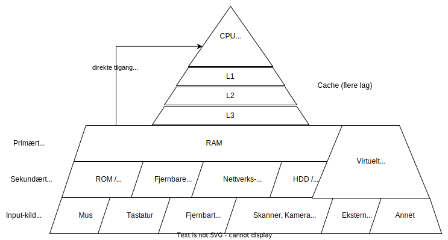
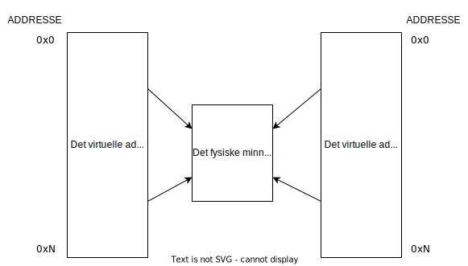
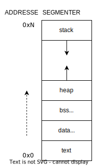
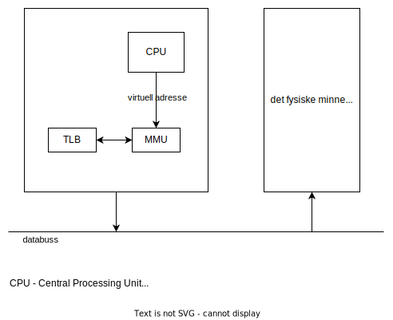
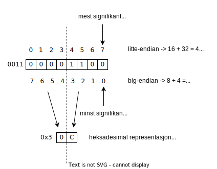
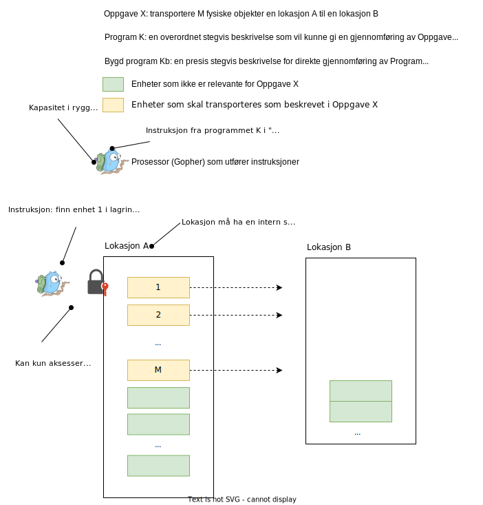

Minne og prosess
Etter å ha lest denne web-siden, skal du:
- kunne resonnere om hva er minne generelt og hvorfor det er sentralt i alle målrettede aktivitetene til homo sapiens
- kunne forklare to modeller for minne i moderne datamaskiner, - hierarkisk og som en tabell, samt kunne nevne noen analogier
- kunne forklare forskjell på flyttig og ikke flyttig minne
- kunne forklare hva er virtuelt minne og hvorfor det er nødvendig med en slik abstraksjon
- kunne forskjell på statisk og dynamisk "random access memory" (RAM)
- kunne forskjell på byte- og ord-adressering
- kunne definere little- og big-endian og forklare med et eller flere eksempler
- kunne forklare modellen for prosesstilstander i Linux OS
1 Innledning
Når en tilstand i et materiale, organisk eller uorganisk, tolkes av hjernen til homo sapiens, produserer hjernen til homo sapiens en kode, som kommuniseres ved hjelp av aktuatorer (stemmebånd, muskler osv.) på en av flere former (lyd, gest, skrift, bilde). En slik kode finnes i hjernen enten gjennom gener eller erfaring (læring). DNA i seg selv er er et eksempel på en kode (eller modell), som homo sapiens har produsert, og som brukes for å beskrive en slags minne, som blir kopiert fra generasjon til generasjon. I utgangspunktet var DNA en modell basert på homo sapiens sine observasjoner av naturlige fenomener, men i nyere tid har homo sapiens lært å endre det genetiske materialet fysisk (NCI Dictionary of Cancer Terms, 2023). For å kunne endre eksisterende minne, basert på et oppfattet/kjent mønster (modell), må man kunne adressere/avlese en eller flere gjenkjennbare enheter i en mengde av enheter (lister, tabeller, matriser osv.). Gen blir brukt som en modell for en grunnleggende enhet for arv i levende organismer. Gen igjen blir betraktet som en mengde (sekvens) av nukleotider, som igjen består av grunnstoffer fosfat, nitrogen og karbon (kommer fra en annen modell for kjemiske grunnstoffer). Slike bestanddeler gjenkjennes basert på lærte koder eller modeller. Modeller brukes igjen for design av artefakter, som, for eksempel, lagringsenheter i datasystemer eller utstyr for å manipulere RNA (CRISPR-CAS9).
2 Minne
Relevante begreper: flyktig og ikke flyktig minne, SRAM, DRAM, cache, databuss, byte-adressering, ord-adressering, big-endian, little-endian, ordlengde, virtuelt minne.
Menneskeskapte lagringsenheter er alle basert på et sammensatt materiale, som enten konserverer energi eller er avhengig av en kontinuerlig tilførsel av energi. Med andre ord, lagringsteknologiene (artefakter), som homo sapiens har laget, konserverer og konsumerer energi. Lengden på tidsperioden for hvor lenge et materiale kan holde på et mønster (gjenkjenbart pga. innlært modell), avhenger av egenskapene til materialet og måter materialet blir strukturert og endret på (runer i stein, skinn, bøker, vinil, silikon osv.). I dagens datasystemer brukes det lagringsenheter av diverse materialer (hovedsakelig silikonbaserte, aluminium og andre metaller i kvantedatamaskiner, og organiske er under utprøving) med forskjellige behov for tilførsel av energi. Vanligivis, lagringsenheter, som kan beholde mønstre for lengre tid (år) kan konservere energi (Solid State Drive), mens langringsenheter som beholder mønstre i en kortere tid (dager) (Static/Dynamic Random Access Memory) er avhengig av kontinuerlig tilførsel av energi. SRAM og DRAM kan i visse tilfeller holde mønstre også årevis, men forutsetnignen uansett er en kontinuerlig tilførsel av energi. Hovedforskjell på statisk og dynamisk minne er at statisk minne beholder tilstand uten energitilførsel i mye lenger perioder enn dynamisk minne gjør. Dynamisk minne er basert på enheter som lader seg fort ut og derfor trenger ny oppladning ofte. Statisk minne er mer kostbart og raskere, i forhold til dynamisk minne. SRAM er også enklere å programmere, hvis man jobber med direkte programmering av integrerte kretser. Statisk minne brukes ofte i L-cache type minne (se Figur 1). Statisk minne kan ikke klassifiseres som ikke flyktig minne, men det er blitt utviklet en type minne, nvSRAM, som er basert på SRAM og som ikke er flyktig.
Minne som er avhengig av kontinuerlig tilførsel av energi kalles ofte for flyktig minne (en. volatile), mens minne som bevarer mønstre en viss tidsperiode uten tilførsel av energi kalles for ikke flyktig minne (en. non-volatile). Minne-hierarki-modeller er ofte laget basert på egenskapene, som lagringskapasitet, aksesstid (tiden det tar avlese eller endre materialets tilstand), pris per lagringsmendge (byte, for eksempel) og energibehov (meg bekjent finnes det ingen standardisert måte å kvantifisere dette; hver utstyrsprodusent har sin egen måte å beskrive og beregne energiforbruket). Desto større lagringskapasitet, desto lengre aksesstid og lavere pris (ikke flyktig minne). Flyktig minne oppdateres relativt ofte, har en kort aksesstid, høyre pris og høyere energiforbruk. Vær oppmerksom på at målte verdier av disse parametrene avhenger av andre faktorer og kan være kontekstavhengige. I minne-hierarki modeller representerer de fleste av de forskjellige elementene fysiske enheter som er bundet sammen med databuss (forbindelse for overføring av signaler mellom komponenter i en datamaskin eller mellom elektroniske enheter). For eksempel, ligger alle cache enhetene (L1-L3) og RAM moduler, som separate enheter på et hovedkort og er koblet sammen med databuss.
Figur 1. Minne-hierarki modell (basert på (Memory Hierarchy / Useful Notes - TV Tropes, 2023)).
Det minst energikrevende og det raskeste minne i datamaskinen er prosessorens registre. Designere av kompilatorer forsøker å oversette fra høyt-nivå språk til en utførbar kode på en måte, som gjør at de mest brukte variablene i programmet beholdes i registrene under utføring av programmet (en. spilling). Resten blir lagt inn i det primære minne, og spesifikke instruksjoner blir brukt for å hente data inn registrene og lagre data i det primære minne igjen. Når data er i registrene, kan aritmetiske operasjoner med data utføres effektivt. Operasjoner, som involverer henting av data fra og skriving av data til det primære minne er mindre effektive.
I 64-bit systemer, er operasjoner på data i registrene ca. 200 ganger raskere enn hvis det er nødvendig å kommunisere med det primære minne. Operasjonene er ca. 10 000 ganger mer energieffektive (data fra 2018).
En annen modell for å betrakte minne (spesielt det primære/RAM) er å illustrere det med en matrise av bits. Hver rad inneholder 8 bits og er den minste helhetlige blokken, som kan adresseres, dvs. hver av disse blokken har en egen adresse. I Figur 2 er dette illustrert med adresser på enheksadesimal (sekstentallssystemet) form. 0x foran et tall skal tolkes som at tallet er heksadesimalt. Hvor mange slike 8 bits blokker som finnes i et datassystem, avhenger av arkitekturen til maskinvaren, siden adresser må lagres i prosessorregistrene for at data kan lagres til og hentes fra minnet. 32-bit arkitektur betyr at den største adressen kan være 0xFFFFFFFF, som da er 232 - 1 = 4 294 967 295, siden man har 32 bits til rådighet.
Figur 2. Minne som en matrise av bits.
I datasystemer med muligheter for å utføre flere programmer tilsynelatende samtidig, kan ikke hver prosess aksessere minne direkte. En slik direkte tilgang kunne gi en prosess mulighet til å lese og skrive til områder i minne, hvor andre prosesser har lagret data. Det er en av hovedgrunnene for hvorfor det er nødvendig med spesielle programmer, som de som inngår i operativsystemet (kan sammenlignes med ledelse i større organisasjoner, hvor man trenger egne stillinger/avdelinger for å administrere tilgang til ressursene). Måten man modellerer denne administrasjonen på i datasystemer, er at man gir hvert program mulighet til bruke så mange adresser, som det er mulig å lage med det antall bits, som er avsatt for adresse i en maskinvarearkitektur (kalles for ordlengde). Et slikt adresserom kaller man for virtuelt minne. Kompilatorer lager utførbar kode, som om programmet kunne bruke hele minnerommet, som det er mulig å lage adresser for på datasystemet (i 32-bit tilfelle er det 4 Gibibytes, i 64-bit tilfelle brukes enten 48 eller 52 bits, dvs. tilsvarende 256 Tebibytes eller 4 Pebibytes). Når hver utførbar fil (kalles for objekt-fil), som representerer en prosess, kan bruke alle de virtuelle adressene, er det ikke mulig å få alle dataene fra alle prosessene inn i det fysiske minne. Se illustrasjon av prinsippet for virtuelt minne i Figur 3.
Figur 3. Virtuelt minne.
Som vist i Figur 3, er enhver prosess basert på en objekt-fil, som har et spesifikt format for hver platform. Objekt-filer på Linux OS har flere segmenter, som illustrert i Figur 4.
Figur 4. Segmenter i en objekt-fil i Linux OS.
Det finnes egen maskinvare (integrert krets), som ligger nærme CPU (mellom CPU og RAM), som oversetter fra de virtuelle til fysiske adressser. CPU har instruksjoner, som inneholder virtuelle adresser i registrene og når instruksjonen blir utført, oversetter MMU (Memory Management Unit) adressene til de fysiske. MMU holder informasjon om hvilke fysiske adresser er tilgjengelig og om det finnes fri minne på systemet. TLB (Translation Lookaside Buffer) er en slags mellomlagring, som holder på noen av de nylig oversatte adressene, da sannsynligheten er stor at disse vil bli brukt flere ganger i nær fremtid (allokering av variabler og funksjoner og så referanse til disse skjer vanligvis i et program). Prosessen er illustrert i Figur 5.
Figur 5. Fra virtuelle til fysiske adresser.
I Figur 6 er det vist et eksempel med 4-bits adresser, dvs. man kan adressere 24=16 minneceller. Et følgende fragment av et Go program, skulle resultere i lagring av et tall i en av de 8-bits cellene.
var tall int8 = 12
En kompilator skulle da oversette en slik kode til en instruksjon, som kan lastes inn i prosessorens register og bli utført. Instruksjon må inneholde flere argumenter, blant annet, hvor mange minneceller vil det være behov for å lagre verdien 12 av typen int8 i det primære minne og hvor (en adresse) verdien skal lagres. Nøyaktig hvor mange celler en verdi skal bruke, avhenger av den abstrakte modellen for representasjon av forskjellige datatyper i et programmeringsspråk. Kompilator vil, avhenging av spesifikasjonen for programmeringsspråket, lage instruksjon, som skal lagre verdien i et viss antall celler (se Figur 6). I de fleste moderne arkitekturene av maksinvaren, så definerer man en minnecelle som en byte, og en byte defineres som 8 bits (en oktett). De fleste arkitekturer bruker byte-addressering i motsetning til ord-adressering, hvor en adresse kan av gangen peke på annet antall bits enn 8.
Figur 6. Veien fra kildekoden til lagring i minne.
Når kjerneprogrammer skal tolke data lagret i minneceller, finnes det to måter å gjøre det på, - avlese data i cellen fra høyre til venstre, dvs. at den mest signifikante bit er til høyre (kalles for "little-endian", eller avlese data fra venstre til høyre, dvs. at den mest signifikant bit er til venstre (kalles for "big-endian"). Se Figur 7, som illustrerer det. Begrepene kan gjenkjennes i Johanthan Swift sitt verk "Gulivers reiser", hvor det var kamp mellom to fraksjoner i liliputt-landet, - den ene som skulle knuse eggeskallet fra den "store" enden og den andre fra den "lille" (spisse).
Vi definerer en byte, som en oktett, som er 8 bits og en nibble som en halv byte eller en halv oktett, det vil si 4 bits. I oversettelse fra binært til heksadesimalt tolkes en nibble med big-endian metoden, dvs. den mest signifikante bit er til venstre (slik som tall i desimaltallsystemet tolkes).
Figur 7. Little- og Big-endian.
Øvelse
Forklar hvordan tallet 108ti kan representeres for å lagre det i en 4-bits arkitektur. Illustrer at den blir laget i minnecellen med adressen 0xF. Hvorfor er det nok med en minnecelle for å lagre denne verdien (anta at det er 8 bits i en minnecelle for det gjeldende datasystemet). Anta at tallet skal tolkes med "little-endian" metoden. Hva er verdien til den mest og minst signifikante bit? Hva skulle verdien til tallet blitt tolket til hvis man brukte "big-endian" metoden?
Les om representasjon av heltall i datamaskiner.
3 Prosess
Minne er alltid knyttet til en eller flere prosesser. Ingen målrettet aktivitet kan foregå uten minne (og dermed også ikke uten energi). Først må beskrivelsen av den tenkte aktiviteten (en plan) lagres i minne. I forbindelse med bruken av datasystemer opererer man med flere forskjellige beskrivelser, - fra en brukerhistorie (historie.txt) til et program skrevet på et programmeringsspråk (main.go) og til et program på assembler-/maskinspråket (main.exe på Windows platform, som illustrert i Figur 6). Et program består av instruksjoner som er bundet til et spesifikt språk (mental modell, både semantisk og syntaktisk) med formelle regler (syntaks, grammatikk). Et program er en plan for en prosess. Når aktuatorene (prosessorene) begynner å utføre programmet, sier vi at det foregår en prosess. Et program (eller deler av et program) lagres i minne og prosessor begynner å utføre en instruksjon av gangen. Programmet kan ha instruksjoner for å vente på en input fra utsiden av systemet (vanligvis kalt for input fra bruker, men kan også være en annen enhet, som data fra en Bluetooth grensesnitt, f. eks.). Programmet kan også ha instruksjoner for å samarbeide med andre prosesser i datasystemet, som også er i det primære minne (kalles for InterProcess Communication, noe vi skal se mer på i datakom delen av vårt emne). I Linux type operativsystemer kan data om alle prosesser, som er i det primære minne, akesseres gjennom mappen /proc (husk Filesystem Hierachy Standard).
En analogi fra den fysiske verden
For å flytte fysiske objekter fra et sted til et annet (prosess), trenges det en mellomlagring (buffer). La oss anta at vi har fått en oppgave X om å transportere antall M fysiske objekter fra lokasjon A til lokasjon B. Oppgave X kan beskrives med et program K, som består av spesifikke instruksjoner for å fullføre oppgaven X. Programmet K må ha kjennskap til lokasjoner A og B, samt antall objekter som skal transporteres og også et eller flere transportmiddler (ryggsekk til Gopheren).
Figur 8. Minne-prosess eksempel.
Vi kjenner at enhver datamaskin har en hovedprosess (prosess 0), som er opphavet for alle andre prosesser på enheten. I transporteringscaset kan prosessen i hjernen til et individ være en slik prosess 0. Individet har behov for transportering, lager en plan for det (program) og allokerer ressurser i miljøet for å realisere planen. Variablene i miljøet (analogt med datamaskin) er rom, tid, tilgjengelige materialer og eventuelt andre individer som ønsker å realisere sine planer. Analogi i et datasystem er flere prosesser som deler på ressurser, samt prosesser som administrerer andre prosesser (hierarki).
I Go programmeringsmiljøet så har vi allerede hovedprosessen med ID 0 lastet inn på platformen og flere andre prosesser, som hovedprosessen har skapt (vanligvis under oppstarten av datasystemet nå operativsystemprogrammer bli lastet inn). Du som programmerer ønsker å realisere din plan, som du uttrykker i Go programmeringsspråket (i en tekstfil). Du bruker et annet program (Go kompilator) for å oversette din plan til en plan som din platform kan gjennomføre, dvs. allokere de nødvendige ressursene, ta input og levere en output. Du kan også bruke ekisterende programmer (planer) i Go, for å utforske miljøet, som dine egne planer vil realiseres i.
Først må vi forstå modellen som blir brukt for å lagre og adminstrere informasjon om prosesser i arbeidsminne. Et (eller flere) programmer sørger for å administrere hvilken prosess som er aktiv og hvilken må eventuelt vente på tur (på engelsk kaller man et slikt program for scheduler. En scheduler har egne datastrukturer i minne, hvor all informasjon om prosesser er lagret (/proc mappen). Man har tilgang til denne informasjonen fra kommandolinjen med kommandoen ps. Siden hver prosess må dele ressurser med andre prosesser, kan ingen prosess regne med å fullføre alle instruksjonene i programmet uavbrutt. Linux operativsystemet har en preemtive eller prevantiv tidsfordeling mellom prosessene. Ingen prosess får prosessortid lengre en et spesifikt tidsperiode (1ms er vanlig). Når tiden for prosessen er ute, gjør CPU-en en kontekstendring (en. context switch), dvs. begynner å utføre en annen prosess, enten fra begynnelsen eller der den forlot den under forrige runden. Disse administrative oppgavene blir modellert med en tilstandsautomat. Figur 9 illustrerer mulige tilstander og overgangene mellom dem for en Linux prosess.
Figur 9. Prosesstilstander for en Linux prosess.
Øvelse Eksperimenter med prosesser i Linux OS.
OBS!
En student oppgadet at det ikke er mulig å bruke Ctrl-z tastkombinasjon for å endre prosesstilstand til en i forgrunn kjørende prosess (en som blokkerer STDIN for shell) fra S til T når man har koblet til (en. attach) en kjørende Docker kontainer "kontainernavn" med kommanodo "docker exec -it kontainernavn /bin/bash" fra Windows terminal-applikasjoner Powershell eller cmd.
Det betyr at de første to eksperimenter i den påfølgende koden kan ikke bli gjennomført i Windows, siden Ctrl-z tastkombinasjon vil koble fra (en. detach) kontaineren. Prosessen som ble startet (med "sleep 100", som betyr å sove i 100 sekunder) vil fortsette å utføre i kontaineren, med minder kontaineren blir eksplisitt stoppet.
Det siste eksperimentet hvor man starter "sleep" prosessen som bakgrunnsprosess (med &), vil funksjonere også i Windows. Der bruker man "kill" programmet for å sende signaler til prosessen og ikke spesifikke tastkombinasjoner.
$ sleep 100
Trykk Ctrl-z (sender SIGSTOP signal
til forgrunnsprosessen; ekvivalent
med bg/fg og kill -STOP pid og
kill -CONT pid
$ ps -o ppid,pid,state,command
# Fortsette prosessen
$ bg
# For å se tilstand R
$ yes > /dev/null
Trykk Ctrl-z
$ ps -o ppid,pid,state,command
$ sleep 100 &
$ ps -o ppid,pid,state,command
$ kill -STOP pid
$ ps -o ppid,pid,state,command
$ kill -CONT pid
$ ps -o ppid,pid,state,command
Vi kan også bruke Go:
package main
import (
"os"
"log"
"syscall"
)
func main() {
p, err := os.FindProcess(os.Getpid())
if err != nil {
log.Println(err)
}
p.Signal(syscall.SIGSTOP)
}
4 Om minneadministrasjon i Go
Go støtter automatisk minneadministrasjon og automatisk "søppelsamling" (en. garbage collection (GC)). En Go programmerer trenger ikke å implementere detaljer for minneadministrasjon, men en god forståelse av hvordan Go kompilator og "runtime" håndterer minne kan bidra til en Go kode av bedre kvalitet. I denne konteksten vil det også hjelpe studentene å lære grunnleggende konsepter om minneadministrasjon i et operativsystem.
GC er et program (eller en modul), som har oversikt over hvilke minneområder er lenger ikke i bruk av programmet og deallokerer disse, slik at de kan bli brukt på nytt av andre allokeringer. Fordelen er at programmerer kan unngå feil relatert til pekere, for eksempel, at et minneområdet er frigjort, mens det er fortsett pekere til det området (det skjer typisk nå man tilegner verdien til en mer globalt definert peker innen en avgrensning og forlater avgrensning). Ulempen er at GB krever systemressurser og derfor vil effektiviteten av programmer gå ned. I mange språk er det mulig å deaktivere GB, hvis man ønsker. Det forutsetter at man selv har oversikt for allokering og deallokering av minne (som i programmeringsspråket C, for eksempel).
Datatyper i et programmeringsspråk representerer forskjellige måter å allokere minne på. For eksempel, peker- og struct-typer i Go vil tvinge kompilatoren til å generere instruksjoner for spesifikke minnestrukturer. Programmerer bruker en abstraksjon av en datatype, som struct, for eksempel, som da blir lagret i en spesifikk minnestruktur i det primære minne (RAM) når programmet utføres. I Go har ikke alle datatyper en transparent minnestruktur. Noen instanser av Go typer kan bli lagret i flere minneblokker, dvs. ikke lagret i et kontinuerlig minneområdet. Slike typer er slice, map, channel, function, interface og string. boolean, tall (int, float), pekere og ikke trygge pekere, struct og array er lagret i en kontinuerlig minneblokk.
Det er også forskjellige modeller for representasjon av hver datatype i minne. For eksempel, uint8 og int8 begge allokerer 1 byte men de tolkes forskjellig.
Go har to pekertyper, - trygg og ikke trygg (unsafe). Trygge pekere har en del begrensinger, som, for eksempel, at det kan ikke utføres aritmetiske operasjoner med dem (*p = *p + 1) og at en type peker kan ikke konverteres til en annen type peker (i *int = f * float64). Utrygge pekere har ikke disse begrensningene, og er derfor farlige. I noen tilfeller er det allikevel forsvarlig (og nødvendig) å bruke utrygge pekere. For eksempel, hvis man ønsker å finne ut hvilken endian variant brukes på datasystemet, kan man bruke unsafe pakken.
var nativeEndian binary.ByteOrder
func init() {
buf := [2]byte{}
*(*uint16)(unsafe.Pointer(&buf[0])) = uint16(0xABCD)
switch buf {
case [2]byte{0xCD, 0xAB}:
nativeEndian = binary.LittleEndian
case [2]byte{0xAB, 0xCD}:
nativeEndian = binary.BigEndian
default:
panic("Could not determine native endianness.")
}
}
5 Nyttige ting
Linux systemprogrammer (kommandoer) kan ha flere type opsjoner (en. options). I norsk språk oppfattes opsjon ofte som et begrep i fagfeltet jus, men ordet stammer fra det latinske ordet optio, som betyr 'fritt valg'. En kommando kan ha ingen eller mange opsjoner. Begrepet parameter kan også brukes, men det brukes sjeldent i engelsk språk, samt det er et innarbeidet begrept i matematikken og i programmeringsspråk, og tvetydighet kan derfor oppstå. En mulig bruk i norsk språk kan være systemkommandoer i Linux har ingen eller flere opsjoner.
Historisk er det 3 typer opsjoner for Unix (inkluderer her Darwin også) og Linux systemprogrammer:
- UNIX opsjoner, som kan grupperes og må ha en bindestrek (som egentlig er hyphen-minus med heksadesimal kode 2D) foran
- BSD opsjoner, som kan grupperes og må ikke brukes med bindestrek
- GNU lange opsjoner, som har to bindestreker foran
Noen fragmenter fra "Linux man pages online" (2023):
Here are the different values that the s, stat and state output
specifiers (header "STAT" or "S") will display to describe the
state of a process:
D uninterruptible sleep (usually IO)
I Idle kernel thread
R running or runnable (on run queue)
S interruptible sleep (waiting for an event to
complete)
T stopped by job control signal
t stopped by debugger during the tracing
W paging (not valid since the 2.6.xx kernel)
X dead (should never be seen)
Z defunct ("zombie") process, terminated but not
reaped by its parent
For BSD formats and when the stat keyword is used, additional
characters may be displayed:
< high-priority (not nice to other users)
N low-priority (nice to other users)
L has pages locked into memory (for real-time and
custom IO)
s is a session leader
l is multi-threaded (using CLONE_THREAD, like NPTL
pthreads do)
+ is in the foreground process group
%CPU cpu utilization of the process in "##.#" format. Currently, it is the CPU time used divided by the time the process has been running (cputime/realtime ratio), expressed as a percentage. It will not add up to 100% unless you are lucky.
%MEM ratio of the process's resident set size (RSS) to the physical memory on the machine, expressed as a percentage.
RSS resident set size, the non-swapped physical memory that a task has used (in kiloBytes).
TTY controlling tty (terminal).
VSZ virtual memory size of the process in KiB (1024-byte units). Device mappings are currently excluded; this is subject to change.
Rob Pike om samtidighet og parallelisme ((gnbitcom, 2015), (Concurrency Is Not Parallelism, 2023)).
6 Referanser
- Go Memory Management – Povilas Versockas. (2018, June 7). Povilasv.me. https://povilasv.me/go-memory-management/
- Go Memory Management Part 2 – Povilas Versockas. (2020, February 6). Povilasv.me. https://povilasv.me/go-memory-management-part-2/
- Go Memory Management Part 3 – Povilas Versockas. (2019, May 31). Povilasv.me. https://povilasv.me/go-memory-management-part-3/
- Memory Hierarchy / Useful Notes - TV Tropes. (2023). TV Tropes. https://tvtropes.org/pmwiki/pmwiki.php/UsefulNotes/MemoryHierarchy
- https://idea.popcount.org/2012-12-11-linux-process-states/
- Memory Blocks -Go 101. (2016). Go101.org. https://go101.org/article/memory-block.html (Memory Blocks -Go 101, 2016)
- Value Parts -Go 101. (2016). Go101.org. https://go101.org/article/value-part.html (Value Parts -Go 101, 2016)
- NCI Dictionary of Cancer Terms. (2023). National Cancer Institute; Cancer.gov. https://www.cancer.gov/publications/dictionaries/cancer-terms/def/crispr-cas9
- egonelbre. (2020, June 18). egonelbre/gophers: Free gophers. GitHub. https://github.com/egonelbre/gophers
- Linux man pages online. (2023). Man7.org. https://man7.org/linux/man-pages/index.html
- Concurrency is not Parallelism. (2023). Go.dev. https://go.dev/talks/2012/waza.slide#1
- gnbitcom. (2015). Concurrency is not Parallelism by Rob Pike [YouTube Video]. In YouTube. https://www.youtube.com/watch?v=oV9rvDllKEg